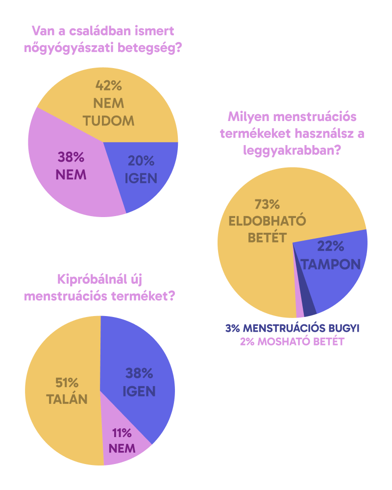
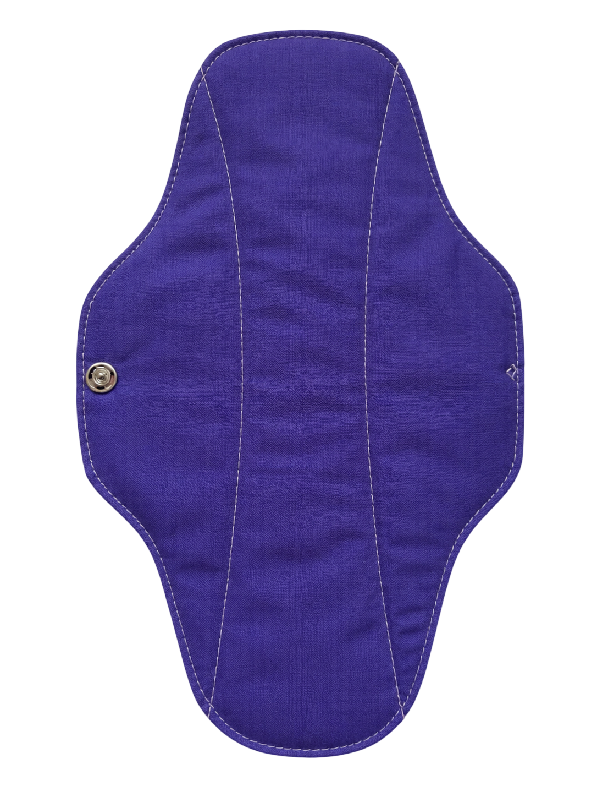
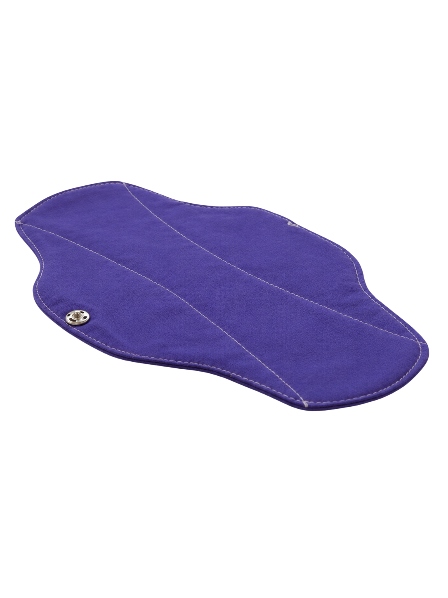
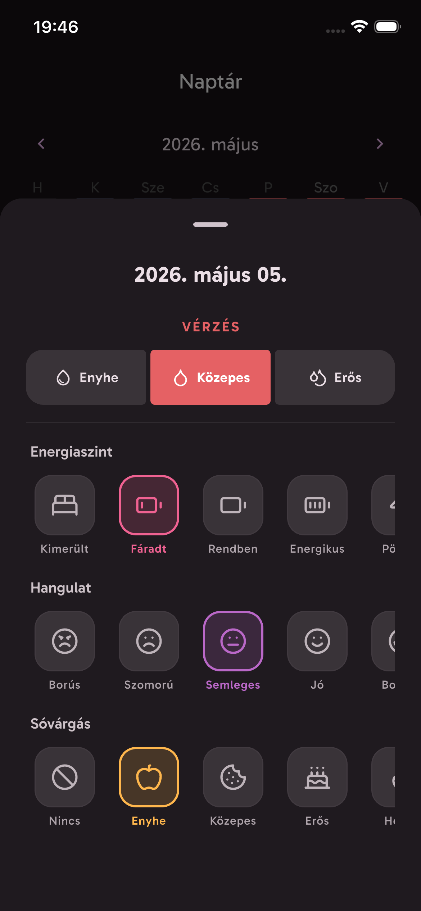
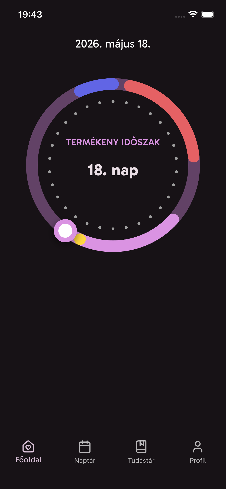
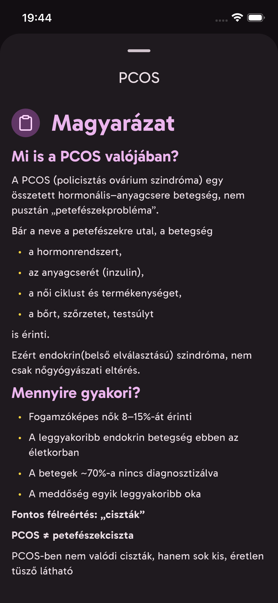

Kléh Sára Laura
18 éves
Betétfejlesztés és kutatás
A Moonly Project célja hogy segítsen a nőknek megérteni testük működését, és ezáltal az egészségüket jobban megőrizni.
Továbbeddig bemutatkozott itt

Egy holisztikus megközelítés
Ahhoz hogy felmérjük a valódi szükségleteket, piackutatást végeztünk a nők körében.
Mielőtt neki álltunk volna a termékfejlesztésnek, megkérdeztünk több mint száz, különböző életkorú nőt olyan kérdésekről, amelyekkel egy pontosabb képet kaphatunk a legégetőbb problémákról. A kérdések között szereplt a higiéniai szokásukról, termékhasználatról, illetve saját vélemény kifejtéséről a női megélt tapasztalatokkal kapcsolatban.
nem tudja, hogy a környezetében van-e nőgyógyászati betegséggel rendelkező családtagja
környezetszennyező, eldobható termékeket használ
szívesen kipróbálna új mensis termékeket
rendkívűl erős vérzést tapasztal

„Nehéz hiteles információt kapni a tüneteimre. A Google-ön már nem is merek rákeresni iyenekre."
- Résztvevő
„Férfiakat is be kellene avatni a női szervezet működésébe!"
- Résztvevő


A kutatás során a leggyakoribb panasz az volt, hogy a hagyományos betétek kényelmetlenek, irritálják a bőrt, és terhelik a környezetet. Így megalkottuk a sajátunkat - ami minden szempontból más, mint amiket eddig használtál.
Klórmentes, illatanyag-mentes, allergiát kiváltó anyagoktól mentes.
Hosszú tervezési folyamat során alakítottuk ki a legkényelmesebb méretet és formát.
Teljesen műanyagmentes csomagolás, ami 90 napon belül komposztálható.



A Moonly alkalamzás megalkotásakor mindig azt tartottuk szem előtt, hogy a lehető legjobb legyen a felhasználói élmény minden korosztály számára! *
Egy érintéssel rögzítheted a tüneteket, hangulatot, energiaszintedet.
Rögzítsd a hangulatod minden nap a pontosabb előrejelzéssel
Az adataidhoz internet nélkül is hozzáférsz, bárhol vagy.
* Az alkalmazást 16 éves kortól lehet használni!
Funkciók
A Moonly nem csak egy naptár. Egy kedves társ, aki segít megérteni a tested működését.
Naplózd a menstruációd, és az esetleges tüneteket! A Moonly rendszeres használat után egyre pontosabb előrejelzést tud adni.
Rögzítsd hogy érzed magad a különböző fázisok alatt! Így később visszanézve pontosabb képet kaphatsz a tested működéséről.
Megbízható, ellenőrzött forrásból származó cikkek és források segítenek megérteni az orvosi szakzsargont
Vizualizált grafikonok a ciklusodról, hangulatodról és tüneteidről - hogy átlásd a adataidat.
Soha többé ne lepjen meg a menstruációd. Diszkrét, személyre szabható értesítések, amik időben jeleznek.
A kommunikáció a végpontok között titkosítva. Semmit nem osztunk meg harmadik féllel - az adataid kizárólag rád tartoznak!
A csapat
Ketten indítottuk el a projektet: célunk, hogy segítsünk a nőknek megérteni a saját testük működését.
18 éves
Betétfejlesztés és kutatás
18 éves
Appfejlesztés és brandépítés
Iratkozz fel levelezőlistánkra, hogy rögtön értesülj amikor az alkalmazás elérhetővé válik